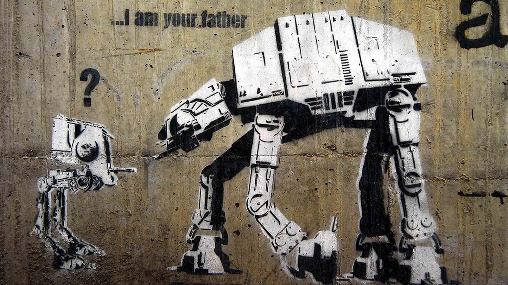

Tema 5: Impacto social del Arte Urbano

El constructivismo social es una teoría del conocimiento en sociología y en las teorías de la comunicación, la cual estudia la forma en la que se construyen entendimientos y conocimientos del mundo como un “concepto compartido” que define una realidad colectiva. Básicamente define lo que los miembros de una sociedad definen como realidad basada en sus observaciones y experiencias en su propio contexto. Un ejemplo comúnmente utilizado es el concepto del dinero, el cual es “real y tiene significado” para una sociedad pero deja de tener valor frente a otra sociedad que no tiene dicho concepto.
Algo que es importante reconocer en el arte urbano es que no solo es un elemento visual. Es un elemento comunicativo. El arte urbano actúa como un mensaje: Está hecho con una intención clara y busca transmitir su mensaje a quien lo observa. Aunque muchos artistas usan sus obras con el objetivo de obtener reconocimiento o renombre, también lo usan como una forma de mostrar sus habilidades, expresar sus ideas o sus intenciones. Es aquí entonces, donde muestra realmente su impacto social: El arte urbano, al ser una representación de la vida en la sociedad, funciona como un medio, o incluso como una crítica, a los conceptos propios que han sido determinados por la sociedad.

Descargado de Link

Descargado de Link

Descargado de Link

Descargado de Link

Descargado de Link

Descargado de Link
De acuerdo al Artículo de Ingrid Van Diest “Political Art or vandalism? How streetart has helped our society question reality”, menciona que los artistas urbanos buscan traer a la luz cuestiones sociales por medio del uso de símbolos e iconografía. Establece que la intención del arte urbano es que el mensaje debe comunicarse directamente con el público y atraer la atención como una forma de “Provocación artística”. El artículo “Street art: High or low art form” escrito por Ed Fuentes define que el High Art es, hasta cierto punto, visto como el arte de los aristócratas, enfocado y definido porque sea para clases sociales altas y con estatus económico o social. En comparación, Establece que el “Low Art” como concepto se refiere a los elementos de la cultura popular y el entretenimiento. El articulo presenta un punto interesante de comparación en como valoramos las cosas en la sociedad. El arte urbano, al ser “accesible, haciendo uso de elementos familiares para el público, y comúnmente aprendido fuera de instituciones de aprendizaje” implica que tradicionalmente no se ha considerado como Arte, pero la percepción cambia una vez que lo traes a otro contexto: Si es exhibido como una pieza en un museo, altera nuestra percepción y requiere que pensemos en la obra desde un punto de vista más objetivo.
Se establece que la razón de esto, es que el arte urbano confunde y juega con esta división: Al ser removido de los lugares tradicionalmente considerados como espacios para el arte, su calificación y espacio contextual cambia: Su valor como pieza y como medio de comunicación es brindado por aquellos que la perciben en su contexto. A fin de cuentas, tal y como el autor menciona: “la diferencia entre uno (High art) y el otro (low art) no es más que una división artificial creada por las mismas personas e instituciones” El arte urbano tiene hoy en día un efecto en como vemos la sociedad. Un ejemplo son artistas como Shepard Fairey que incluye elementos políticos en su trabajo, o Bansky que representa sus opiniones sobre la sociedad mediante sus piezas, lo que lleva a que las personas lo acepten dentro de su vida diaria. El arte urbano, en la actualidad dejó de tener solo un papel de "concientizar sobre temas sociopolíticos" y ha empezado a generar un movimiento cuyo objetivo también es embellecer, convertir lo gris de la sociedad en algo más colorido y expresivo. Con el aumento de la notoriedad de algunos artistas en las últimas décadas, el arte urbano se ha mezclado con elementos de lo que se considera "Mainstream Art" y se ha vuelto una parte importante en lo que hoy se considera el arte popular y arte cultural. En este momento hay un sin número de estilos y motivaciones sociopolíticas que definen los estilos de los actuales artistas urbanos, al punto que muchos han dejado atrás los elementos “ilegales” y hacen sus obras en espacios permitidos y con autorizaciones previas con el objetivo de expresar sus ideas.
Videos de apoyo
Te invitamos a ver los siguientes videos con los cuales puedes aprender un poco màs del tema.
Into the spiderverse - Pablo Pines
Ejemplo de como la escena del video anterior es llevada la vida real. Link